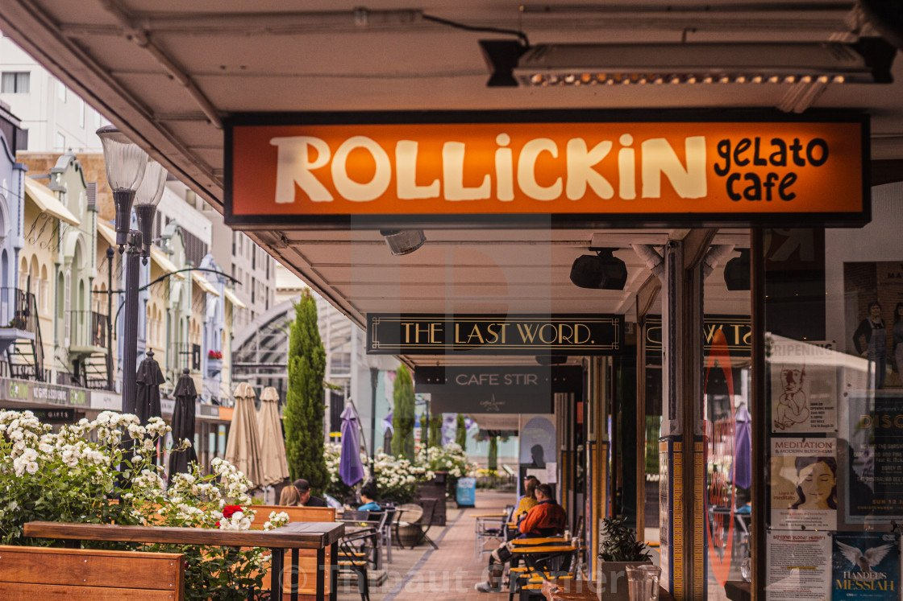
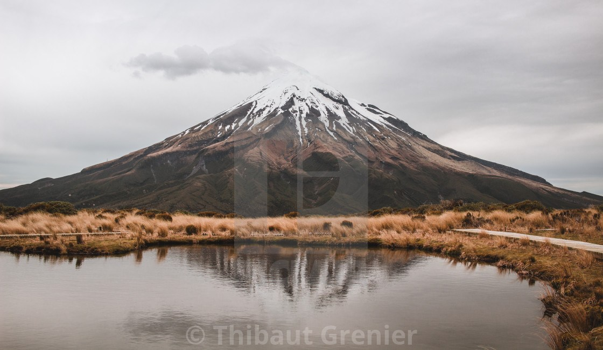
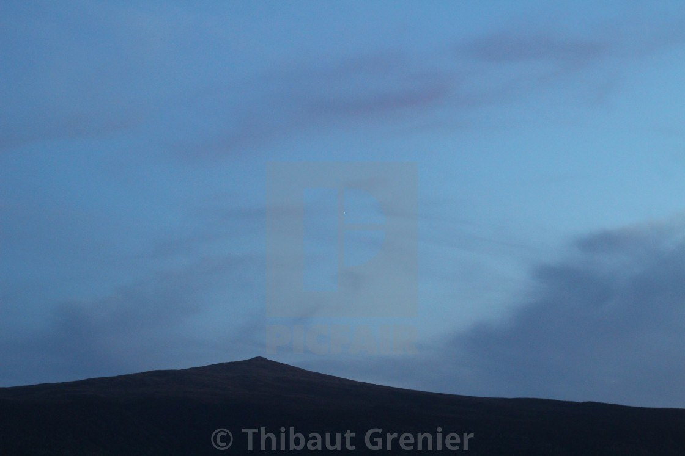

Photography
New Zealand photo showcase

24mm | ƒ 2.8 | ISO 160 | 1/500sec

50mm | ƒ 7.1 | ISO 200 | 1/200sec

50mm | ƒ 2.8 | ISO 400 | 1/500sec

24mm | ƒ 4 | ISO 100 | 1/1000sec

50mm | ƒ 7.1 | ISO 100 | 1/400sec

50mm | ƒ 5.6 | ISO 100 | 1/250sec

50mm | ƒ 4 | ISO 100 | 1/1000sec

24mm | ƒ 2.8 | ISO 100 | 1/500sec

50mm | ƒ 2.8 | ISO 1600 | 1/60sec

50mm | ƒ 2.8 | ISO 800 | 1/500sec
Reflex photography + Adobe Camera Raw editing improvement, and creation of my photo gallery and online store: overlinedesign.picfair.com